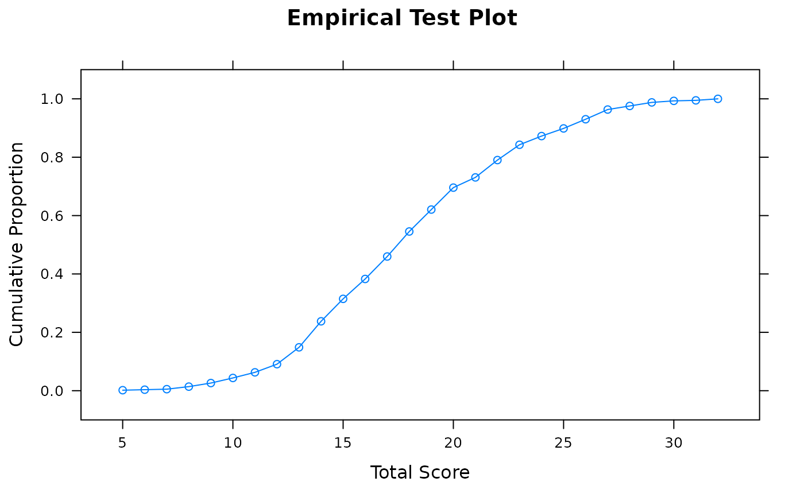
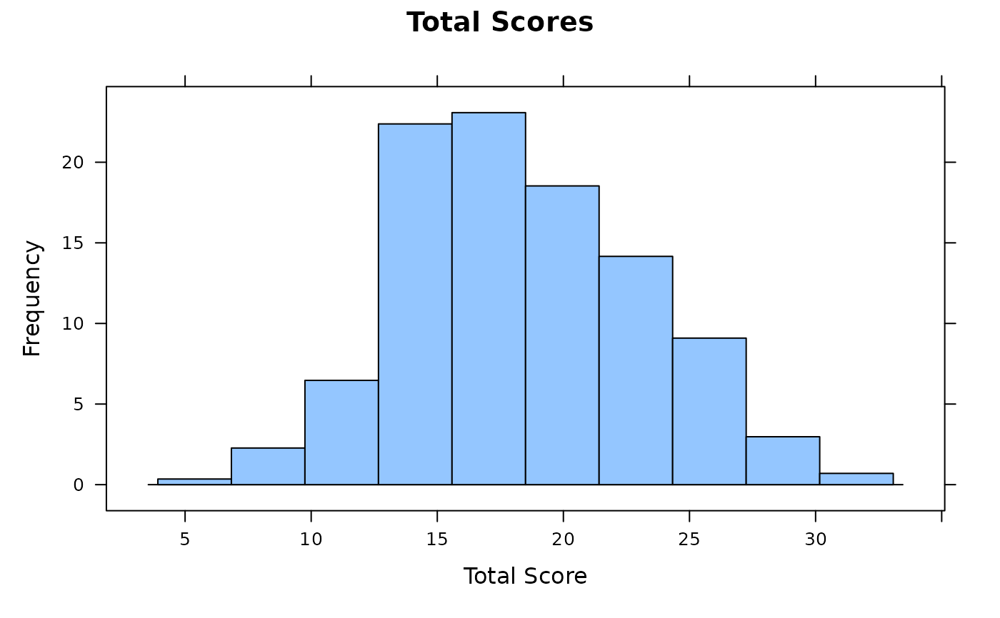
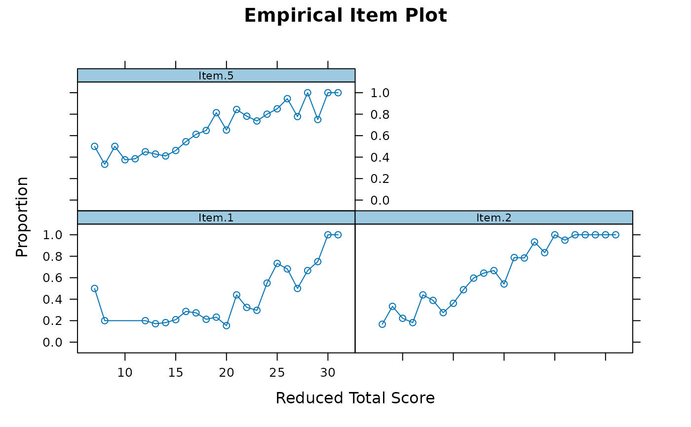
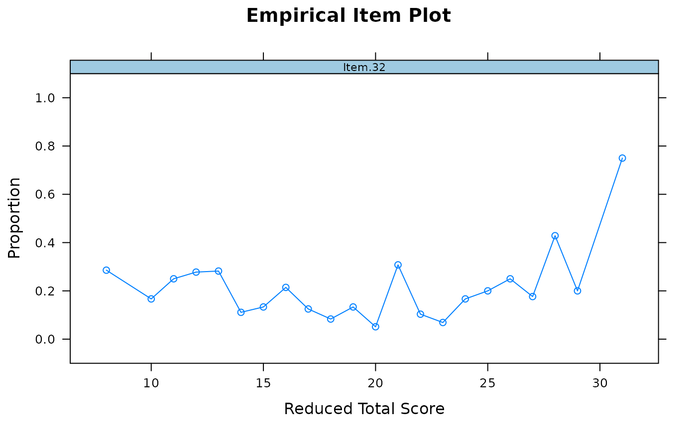
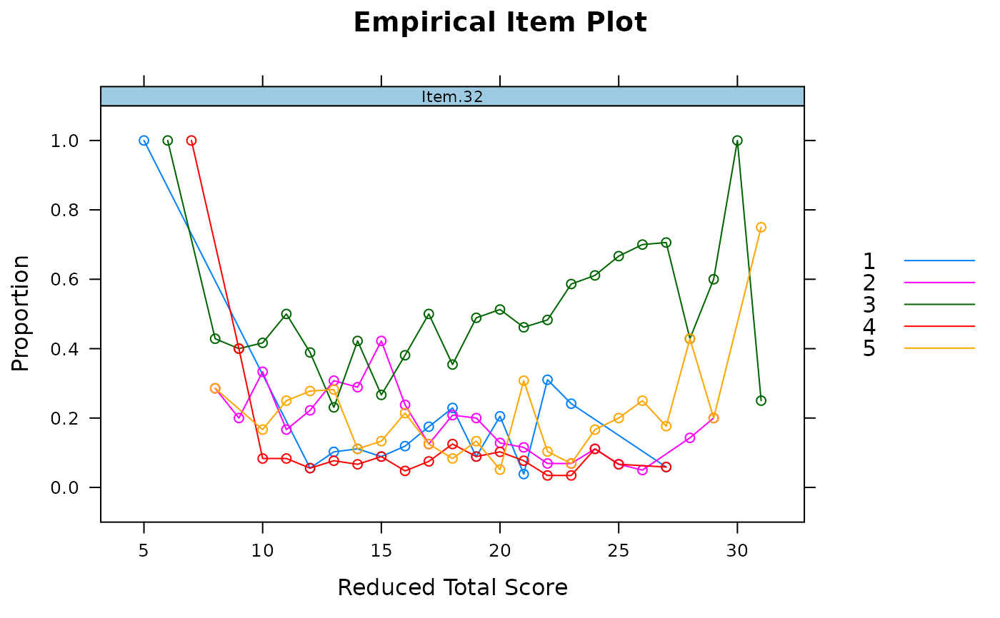
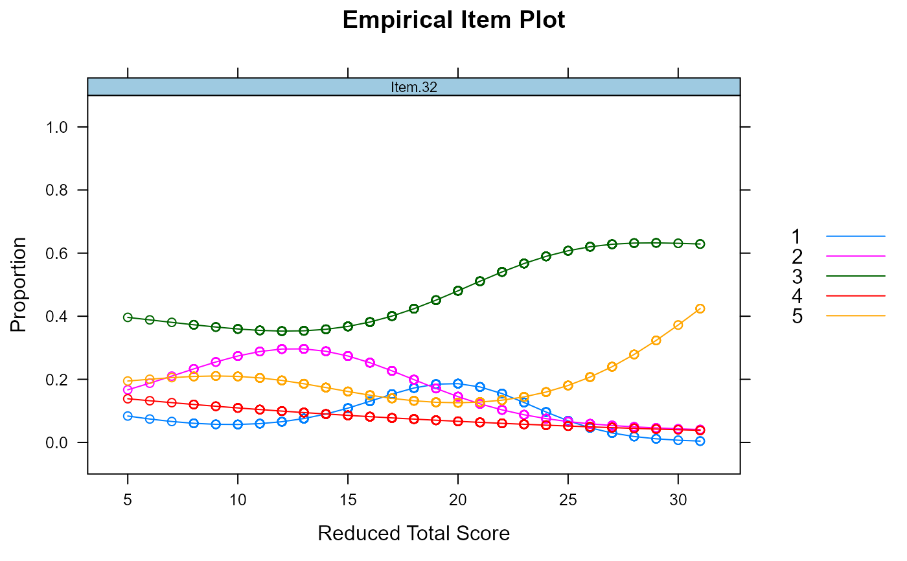

Function to generate empirical unidimensional item and test plots
Source:R/empirical_plot.R
empirical_plot.RdGiven a dataset containing item responses this function will construct empirical graphics using the observed responses to each item conditioned on the total score. When individual item plots are requested then the total score will be formed without the item of interest (i.e., the total score without that item).
empirical_plot( data, which.items = NULL, smooth = FALSE, formula = resp ~ s(TS, k = 5), main = NULL, par.strip.text = list(cex = 0.7), boxplot = FALSE, par.settings = list(strip.background = list(col = "#9ECAE1"), strip.border = list(col = "black")), auto.key = list(space = "right", points = FALSE, lines = TRUE), ... )
Arguments
| data | a |
|---|---|
| which.items | a numeric vector indicating which items to plot in a faceted image plot. If NULL then a empirical test plot will be constructed instead |
| smooth | logical; include a GAM smoother instead of the raw proportions? Default is FALSE |
| formula | formula used for the GAM smoother |
| main | the main title for the plot. If NULL an internal default will be used |
| par.strip.text | plotting argument passed to |
| boxplot | logical; use a boxplot to display the marginal total score differences instead of scatter plots of proportions? Default is FALSE |
| par.settings | plotting argument passed to |
| auto.key | plotting argument passed to |
| ... | additional arguments to be passed to |
Details
Note that these types of plots should only be used for unidimensional tests with monotonically increasing item response functions. If monotonicity should be true for all items, however, then these plots may serve as a visual diagnostic tool so long as the majority of items are indeed monotonic.
References
Chalmers, R., P. (2012). mirt: A Multidimensional Item Response Theory Package for the R Environment. Journal of Statistical Software, 48(6), 1-29. doi: 10.18637/jss.v048.i06
See also
Examples
# \donttest{ SAT12[SAT12 == 8] <- NA data <- key2binary(SAT12, key = c(1,4,5,2,3,1,2,1,3,1,2,4,2,1,5,3,4,4,1,4,3,3,4,1,3,5,1,3,1,5,4,5)) #test plot empirical_plot(data)# replace weird looking items with unscored versions for diagnostics empirical_plot(data, 32)data[,32] <- SAT12[,32] empirical_plot(data, 32)empirical_plot(data, 32, smooth = TRUE)# }